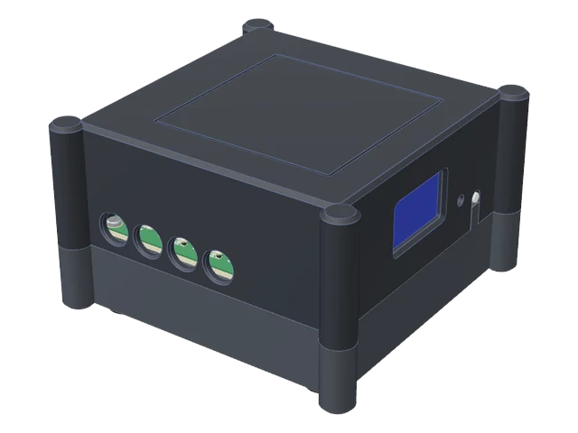

お使いの検出器はどれですか

v2.1準備中
宇宙線を数えよう
接続オプション
- 1つなぐ
- 2測る
- 3保存する
総イベント数
0
平均カウントレート
0.000回/秒± —
経過時間
00:00:00
エネルギー分布 ADC ヒストグラム
カウントレートの変化
点数 0
- 温度
- -- °C
- 湿度
- -- %
- 気圧
- -- hPa
- 外部検出器
- 平均 ADC
- --
- デッドタイム
- -- s
- トリガー
- --
記録の中身
| # | PC 時刻 | 基板の時刻 [µs] | ADC | デッドタイム [µs] | 温度 [°C] | 湿度 [%] | 気圧 [hPa] | D1 | D2 | D3 | A1 | A2 | A3 |
|---|
データを待っています…
- 総イベント数
- 0
- 測定時間
- --
- 平均カウントレート
- --
- 統計誤差
- --
- 検出器の計数
- --
- ライブタイム
- --
- 総デッドタイム
- --
- 平均 ADC 値
- --
- 最大 ADC 値
- --
- 平均温度
- --
- 温度の標準偏差
- --
- 最高 / 最低温度
- --
- 平均湿度
- --
- 最高 / 最低湿度
- --
- 平均気圧
- --
- 最高 / 最低気圧
- --
- 外部検出器の反応率
- --
- 外部検出器のアナログ平均
- --
- ピーク ADC
- --
- t_peak [µs]
- --
- 波形の数
- 0
- 波形/秒
- 0.0
- 壊れた行
- 0
このモードについて